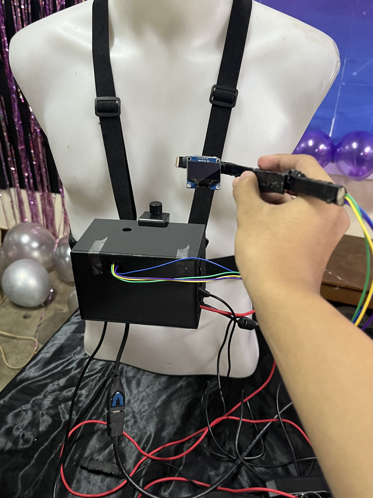
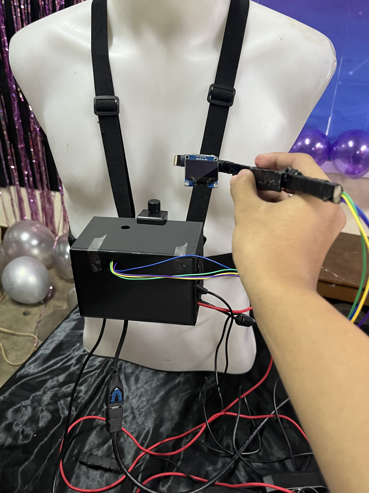
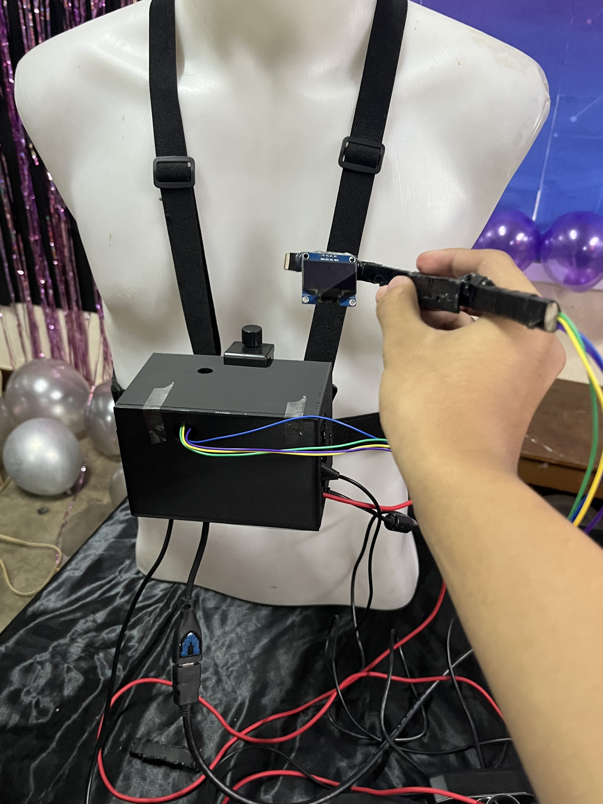

My Projects


 

I am a 2nd year Bachelor of Science in Civil Engineering (BSCE) student at National University – Manila.
I was born in Rodriguez, Rizal on October 25, 2006.
My journey in programming began when I was in Grade 10. I discovered coding and quickly became interested because I truly enjoyed it. I started learning the basics of HTML, CSS, and JavaScript. Later, I discovered Python and learned how to create simple graphical user interfaces (GUIs).
When I reached Grade 12, we were assigned a project to help individuals with hearing impairments. My team and I developed a prototype called RETINA, which stands for Responsive Eyewear with Translation and Interpretation for Natural Assistance.
The RETINA device was designed to help people who do not know sign language understand those who use it. It was powered by a Raspberry Pi 4B (4GB). Our AI program could run at 17 frames per second using the Raspberry Pi. We trained it using 10,000 images, although it could only detect 5 sign language gestures. When a gesture was detected, the device could output both text and sound.
This project earned the Top 1 position with a score of 94.71%, which helped me and my friends graduate with High and Highest Honors. Unfortunately, despite the project’s potential to impact the hearing-impaired community, it didn’t receive the recognition we had hoped for.
After this experience, I thought I might pursue a computer-related course like Computer Science, Information Technology, or Electronics Engineering. But deep down, my dream has always been to become a Civil Engineer. That’s why I chose to take Civil Engineering — yet my passion for coding never stopped.
During my first year in college, out of boredom, I improved the RETINA program by shifting from image processing to hand landmark detection. I wrote the code in just one hour, though data gathering and model training took a full week because I was also focused on my studies.
In that same year, I also learned how to code using C++. As part of another school project, I created a Concrete Mix Calculator. Users simply input the area, and the calculator uses a fixed concrete thickness of 18 cm (since I was still learning about concrete strength). The program then automatically calculates the required volume and estimates the cost of materials — cement, sand, and aggregates.

Skills that drive my passion.


Thank you for taking the time to read my story. Even though I chose a different field, my passion for programming continues to grow. I believe that combining engineering knowledge with technology can lead to innovative solutions that truly help people. This is just the beginning of my journey — and I’m excited for what’s next.